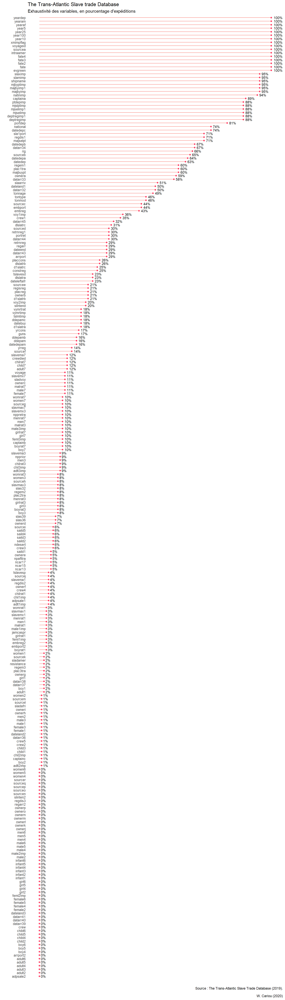

Chapitre2 Inventaire des données
2.1 Inspection visuelle des données
La visualisation du tableau de données dans la console à l’aide la fonction printn’est guère envisageable en raison de ses dimensions. Utilisez plutôt l’affichage sous la forme de table html (fonction View ou le raccourcis du panneau Environnement).
2.2 Structure des données
2.2.1 Voyages, un objet de type Tibble
- Un tibble est une réinvention moderne du data.frame de R. C’est une matrice composée :
- d’une marge d’en-têtes (variables names)
- de lignes (rows, obs.)
- de colonnes (columns, variables).
- d’une marge d’en-têtes (variables names)
- Chaque colonne comporte des données d’un même type.
- Les colonnes sont nécessairement de longueur identique.
- La notion de dimensions correspond au nombre de lignes et de colonnes composant le tableau de données.
## [1] 36002 2742.2.2 Les variables
2.2.2.1 Lister les en-têtes (variables names)
Les noms de variables sont classées en fonction de leur position d’index par défaut. Il est également possible de les afficher alphabétiquement par l’instruction sort(names(voyages)).
## [1] "intraamer" "voyageid" "adlt1imp" "adlt2imp" "adlt3imp"
## [6] "adpsale1" "adpsale2" "adult1" "adult2" "adult3"
## [11] "adult4" "adult5" "adult6" "adult7" "arrport"
## [16] "arrport2" "boy1" "boy2" "boy3" "boy4"
## [21] "boy5" "boy6" "boy7" "boyrat1" "boyrat3"
## [26] "boyrat7" "captaina" "captainb" "captainc" "chil1imp"
## [31] "chil2imp" "chil3imp" "child1" "child2" "child3"
## [36] "child4" "child5" "child6" "child7" "chilrat1"
## [41] "chilrat3" "chilrat7" "constreg" "crew" "crew1"
## [46] "crew2" "crew3" "crew4" "crew5" "crewdied"
## [51] "d1slatra" "d1slatrb" "d1slatrc" "datarr32" "datarr33"
## [56] "datarr34" "datarr36" "datarr37" "datarr38" "datarr39"
## [61] "datarr40" "datarr41" "datarr43" "datarr44" "datarr45"
## [66] "ddepam" "ddepamb" "ddepamc" "deptregimp" "deptregimp1"
## [71] "dlslatra" "dlslatrb" "dlslatrc" "embport" "embport2"
## [76] "embreg" "embreg2" "evgreen" "fate" "fate2"
## [81] "fate3" "fate4" "female1" "female2" "female3"
## [86] "female4" "female5" "female6" "female7" "feml1imp"
## [91] "feml2imp" "feml3imp" "girl1" "girl2" "girl3"
## [96] "girl4" "girl5" "girl6" "girl7" "girlrat1"
## [101] "girlrat3" "girlrat7" "guns" "infant1" "infant2"
## [106] "infant3" "infant4" "infant5" "infant6" "jamcaspr"
## [111] "majbuypt" "majbyimp" "majbyimp1" "majselpt" "male1"
## [116] "male2" "male3" "male4" "male5" "male6"
## [121] "male7" "male1imp" "male2imp" "male3imp" "malrat1"
## [126] "malrat3" "malrat7" "men1" "men2" "men3"
## [131] "men4" "men5" "men6" "men7" "menrat1"
## [136] "menrat3" "menrat7" "mjbyptimp" "mjselimp" "mjselimp1"
## [141] "mjslptimp" "natinimp" "national" "ncar13" "ncar15"
## [146] "ncar17" "ndesert" "npafttra" "nppretra" "npprior"
## [151] "ownera" "ownerb" "ownerc" "ownerd" "ownere"
## [156] "ownerf" "ownerg" "ownerh" "owneri" "ownerj"
## [161] "ownerk" "ownerl" "ownerm" "ownern" "ownero"
## [166] "ownerp" "plac1tra" "plac2tra" "plac3tra" "placcons"
## [171] "placreg" "portdep" "portret" "ptdepimp" "regarr"
## [176] "regarr2" "regdis1" "regdis2" "regdis3" "regem1"
## [181] "regem2" "regem3" "regisreg" "resistance" "retrnreg"
## [186] "retrnreg1" "rig" "saild1" "saild2" "saild3"
## [191] "saild4" "saild5" "shipname" "sla1port" "slaarriv"
## [196] "sladafri" "sladamer" "sladvoy" "slamimp" "slas32"
## [201] "slas36" "slas39" "slavema1" "slavema3" "slavema7"
## [206] "slavemx1" "slavemx3" "slavemx7" "slavmax1" "slavmax3"
## [211] "slavmax7" "slaximp" "slinten2" "slintend" "sourcea"
## [216] "sourceb" "sourcec" "sourced" "sourcee" "sourcef"
## [221] "sourceg" "sourceh" "sourcei" "sourcej" "sourcek"
## [226] "sourcel" "sourcem" "sourcen" "sourceo" "sourcep"
## [231] "sourceq" "sourcer" "tonmod" "tonnage" "tontype"
## [236] "tslavesd" "tslavesp" "tslmtimp" "voy1imp" "voy2imp"
## [241] "voyage" "vymrtimp" "vymrtrat" "women1" "women2"
## [246] "women3" "women4" "women5" "women6" "women7"
## [251] "womrat1" "womrat3" "womrat7" "xmimpflag" "year5"
## [256] "year10" "year25" "year100" "yearaf" "yearam"
## [261] "yeardep" "yrcons" "yrreg" "datebuy" "datedep"
## [266] "datedepa" "datedepam" "datedepb" "datedepc" "dateend"
## [271] "dateland1" "dateland2" "dateland3" "dateleftafr"2.2.2.2 Types de variables
Les fonctions str (base R) ou glimpse (package dplyr) listent les différentes variables, indiquent leur type ainsi que les premières valeurs quelles prennent. La fonction typeof retourne quant à elle le type de données d’une variable déterminée. Par exemple, typeof(voyages$shipname) retourne le type de la variable shipname. L’argument facultatif list.len=ncol(voyages[1:10]) permet de limiter la liste des variables (ici les dix premières). Pour afficher la totalité de la structure, utilisez list.len=ncol(voyages).
## tibble [36,002 x 274] (S3: tbl_df/tbl/data.frame)
## $ intraamer : chr [1:36002] "Trans-Atlantic" "Trans-Atlantic" "Trans-Atlantic" "Trans-Atlantic" ...
## $ voyageid : num [1:36002] 1 2 3 4 5 6 7 8 9 10 ...
## $ adlt1imp : num [1:36002] NA NA NA NA NA NA NA NA NA NA ...
## $ adlt2imp : num [1:36002] 1 NA NA NA NA NA NA NA NA NA ...
## $ adlt3imp : num [1:36002] NA NA NA NA NA NA NA NA NA NA ...
## $ adpsale1 : chr [1:36002] NA NA NA NA ...
## $ adpsale2 : chr [1:36002] NA NA NA NA ...
## $ adult1 : num [1:36002] NA NA NA NA NA NA NA NA NA NA ...
## $ adult2 : num [1:36002] NA NA NA NA NA NA NA NA NA NA ...
## $ adult3 : num [1:36002] NA NA NA NA NA NA NA NA NA NA ...
## [list output truncated]2.2.2.3 Valeurs disponibles pour chaque variable
- Dans R, les observations manquantes sont notées NA (not available).
- Par défaut, la plupart des fonctions calculatoires (somme, moyenne, minimum, maximum, etc.) n’acceptent pas les variables contenant des valeurs manquantes.
2.2.2.3.1 Valeurs disponibles par variables
## intraamer voyageid adlt1imp adlt2imp adlt3imp adpsale1
## 36002 36002 1579 398 3118 1272
## adpsale2 adult1 adult2 adult3 adult4 adult5
## 86 749 0 53 0 0
## adult6 adult7 arrport arrport2 boy1 boy2
## 1 4207 10399 154 810 183
## boy3 boy4 boy5 boy6 boy7 boyrat1
## 2936 134 65 24 3466 901
## boyrat3 boyrat7 captaina captainb captainc chil1imp
## 3040 3466 31943 3552 200 1579
## chil2imp chil3imp child1 child2 child3 child4
## 276 3118 533 71 255 5
## child5 child6 child7 chilrat1 chilrat3 chilrat7
## 0 1 4207 1579 3118 4207
## constreg crew crew1 crew2 crew3 crew4
## 9089 40 12718 305 2281 1525
## crew5 crewdied d1slatra d1slatrb d1slatrc datarr32
## 299 4450 6634 7736 8830 18066
## datarr33 datarr34 datarr36 datarr37 datarr38 datarr39
## 21027 24280 493 559 559 18
## datarr40 datarr41 datarr43 datarr44 datarr45 ddepam
## 26 28 10446 10852 11376 5634
## ddepamb ddepamc deptregimp deptregimp1 dlslatra dlslatrb
## 5732 6358 31610 31610 8243 9290
## dlslatrc embport embport2 embreg embreg2 evgreen
## 11089 15709 974 15644 971 36002
## fate fate2 fate3 fate4 female1 female2
## 36002 36002 36002 36002 191 23
## female3 female4 female5 female6 female7 feml1imp
## 395 5 0 3 3939 1090
## feml2imp feml3imp girl1 girl2 girl3 girl4
## 47 3432 730 128 2822 122
## girl5 girl6 girl7 girlrat1 girlrat3 girlrat7
## 48 24 3466 901 3040 3466
## guns infant1 infant2 infant3 infant4 infant5
## 6167 124 1 161 7 0
## infant6 jamcaspr majbuypt majbyimp majbyimp1 majselpt
## 0 954 21641 34320 34320 25602
## male1 male2 male3 male4 male5 male6
## 194 45 396 8 0 4
## male7 male1imp male2imp male3imp malrat1 malrat3
## 3939 1090 47 3432 1090 3432
## malrat7 men1 men2 men3 men4 men5
## 3939 909 289 3062 145 80
## men6 men7 menrat1 menrat3 menrat7 mjbyptimp
## 29 3466 901 3040 3466 34320
## mjselimp mjselimp1 mjslptimp natinimp national ncar13
## 31735 31736 31736 33822 26465 1956
## ncar15 ncar17 ndesert npafttra nppretra npprior
## 1883 1863 2325 1680 3471 3081
## ownera ownerb ownerc ownerd ownere ownerf
## 21386 7707 4114 2690 1867 1308
## ownerg ownerh owneri ownerj ownerk ownerl
## 805 453 191 91 32 14
## ownerm ownern ownero ownerp plac1tra plac2tra
## 12 5 5 5 21755 2787
## plac3tra placcons placreg portdep portret ptdepimp
## 552 9183 7464 29131 10714 31610
## regarr regarr2 regdis1 regdis2 regdis3 regem1
## 10366 152 25617 1270 86 21759
## regem2 regem3 regisreg resistance retrnreg retrnreg1
## 2782 554 7428 569 10525 10672
## rig saild1 saild2 saild3 saild4 saild5
## 23585 1936 2067 2006 2062 2050
## shipname sla1port slaarriv sladafri sladamer sladvoy
## 34367 25618 18356 291 783 3914
## slamimp slas32 slas36 slas39 slavema1 slavema3
## 34079 2942 2444 2361 1579 3118
## slavema7 slavemx1 slavemx3 slavemx7 slavmax1 slavmax3
## 4207 1090 3432 3939 901 3040
## slavmax7 slaximp slinten2 slintend sourcea sourceb
## 3466 34371 58 7294 35988 23454
## sourcec sourced sourcee sourcef sourceg sourceh
## 15701 10638 7432 5070 3670 2769
## sourcei sourcej sourcek sourcel sourcem sourcen
## 2030 1370 819 480 261 127
## sourceo sourcep sourceq sourcer tonmod tonnage
## 72 30 15 5 16698 17663
## tontype tslavesd tslavesp tslmtimp voy1imp voy2imp
## 16623 8298 1504 6477 13009 7085
## voyage vymrtimp vymrtrat women1 women2 women3
## 3809 6515 6477 872 337 3027
## women4 women5 women6 women7 womrat1 womrat3
## 143 81 27 3466 901 3040
## womrat7 xmimpflag year5 year10 year25 year100
## 3466 35882 36002 36002 36002 36002
## yearaf yearam yeardep yrcons yrreg datebuy
## 36002 36002 36002 6245 4901 6625
## datedep datedepa datedepam datedepb datedepc dateend
## 22851 22869 5630 24008 26465 10434
## dateland1 dateland2 dateland3 dateleftafr
## 17987 477 18 8166- fonction
colSums(total des valeurs) ;
- constante logique
is.na; - opérateur d’exclusion
!
2.2.2.3.2 Valeurs disponibles pour chaque variable, représentation graphique
# Préparation des données
# Valeurs disponible / variables
n <- round(colSums((!is.na(voyages))/length(voyages$voyageid)),2)
# Conversion en tableau de données
variables_dispo <- data.frame(n)
# conversion du nom de ligne en colonne
variables_dispo <- rownames_to_column(variables_dispo, "variable")
# Graphique
library(ggplot2)
graphique <- ggplot(data=variables_dispo, aes(x = reorder(variable, n), y=n)) +
geom_segment( aes(x=reorder(variable, n), xend=reorder(variable, n), y=0, yend=n, color="#ff1744")) +
geom_point( size=1, color="#ff1744", fill=alpha("#ff1744", 0.3), alpha=0.7, shape=21, stroke=1) +
coord_flip() +
geom_text(aes(label=scales::percent(n)), hjust=-.3, size = 3) +
labs( x = "", y = "",
title ="The Trans-Atlantic Slave trade Database ",
subtitle = "Exhaustivité des variables, en pourcentage d'expéditions",
caption = "Source : The Trans-Atlantic Slave Trade Database (2019).
\n W. Cariou (2020)") +
theme_minimal() +
theme(legend.position = "none",panel.grid.major = element_blank(),panel.grid.minor = element_blank(), axis.text.x=element_blank())
graphique
2.2.3 Visualiser les valeurs uniques d’une variable
## [1] "Denmark / Baltic" "France" "Great Britain"
## [4] "Netherlands" "Other" "Portugal"
## [7] "Portugal / Brazil" "Spain / Uruguay" "USA"2.2.4 Dénombrer le nombre de valeurs uniques d’une variable
## [1] 102.3 Expéditions ajoutées à l’édition 2019 de la base Trans Atlantic slave trade Dabase
Vous devez préalablement télécharger la version 2010 de la base de données (tastdb-exp-2010.sav) dans votre répertoire de travail ainsi que le script de lecture (tastdb10-spss-import.R) depuis l’adresse https://github.com/wilcar/slaves-voyages). La lecture des données par l’instruction ci-dessous. La base de donnée est importée sous le nom voyages_10.
Pour identifier les expéditions ajoutées à l’édition 2019 de la base de données, vous aller effectuer une jointure entre les deux bases en utilisant fonction anti_join du package dplyr. Elle renvoie toutes les lignes de la table de “gauche” pour lesquelles il n’y a pas de valeurs correspondantes dans la table de “droite”. Les termes “gauche et”droite" renvoient à la position des arguments d’anti_join, voyages étant à gauche devoyage_10`.
## # A tibble: 34 x 3
## year100 national n
## <dbl> <chr> <int>
## 1 1500 <NA> 395
## 2 1500 France 3
## 3 1500 Portugal 2
## 4 1500 Spain 2
## 5 1600 <NA> 206
## 6 1600 Great Britain 41
## 7 1600 Spain 22
## 8 1600 Portugal 8
## 9 1600 Netherlands 6
## 10 1600 USA 4
## # ... with 24 more rows## # A tibble: 86 x 3
## year100 ptdepimp n
## <dbl> <chr> <int>
## 1 1500 <NA> 274
## 2 1500 San Lucar 71
## 3 1500 Seville 17
## 4 1500 Canary Islands 13
## 5 1500 Lisbon 13
## 6 1500 Tenerife 9
## 7 1500 Cadiz 3
## 8 1500 Portugal, port unspecified 1
## 9 1500 Spanish Circum-Caribbean, unspecified 1
## 10 1600 <NA> 185
## # ... with 76 more rows